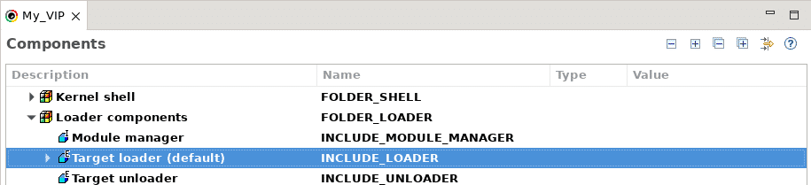

Configuring and setting up the VSB and VIP is known as platform development.
After this section you will be able to:
The kernel shell supports the VI editor as its primary editor and emacs as a secondary editor. While working in the shell, it will store commands in a history list with a maximum length of 20 commands. The shell supports command-line completion.
To start working with the VI editor, you need to press ESC to enter line-editing mode. Here is a list of those commands.
Mentioned before, the shell supports command autocompletion. To perform this, use the following commands:
To enable emacs use the following command:
shConfig "LINE_EDIT_MODE=emacs"
As a note, emacs can do a lot more than the Vi editor but has much more overhead. This is why VI is the primary by default.
Lastly you can modify the command line history with the h() function. This can increases the default of 20 all the way to 500 if you use h 500, for example.
The object-module loader interacts with the kernel to load or unload code at runtime. This is useful during project development because it lets you unload, recompile, and then reload the object-modules that are being developed.
The alternative is to link the development code to a VIP. In this case, every time you want recompile that code you will have to rebuild the VIP and reboot the target.
To use an object module loader, first configure your VIP to include the component: INCLUDE_LOADER.
The loader must have access to the symbol table, as the object-module relies on information from it.
After the project has been configured you have access to two new functions. The first is ld() which lets you load C interpreter commands and unld() which unloads C interpreter commands.
The object-module loader lets you dynamically expand VxWorks. When code is loaded onto the OS, it makes no distinction between the original image and the new module loaded in.
Lastly the object-module loader allows for the handling of memory allocation. This happens on a per-load basis and for modules that are downloaded.
This has two applications. First, to dynamically allocate memory for downloaded code and free that memory when an unload is called. Second, the caller can specify the addresses of memory that have already been allocated. This allows you to have more control over the layout of the code in memory.
- Do not unload an object-module while its tasks are still running, this may result in unexpected ways.
Configuring and setting up the VSB and VIP is known as platform development.

VxWorks is a robust operating system; it has many useful and powerful features for you to use in your project.

All VxWorks projects are different, but they all require hardware configuration.

Step-by-step instructions for running the VxWorks 6.9.3.1 BSP on the Zynq-7000 SoC.